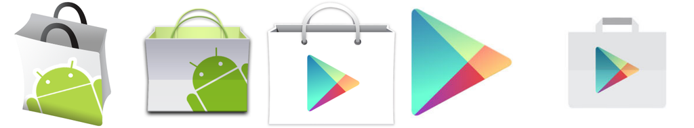
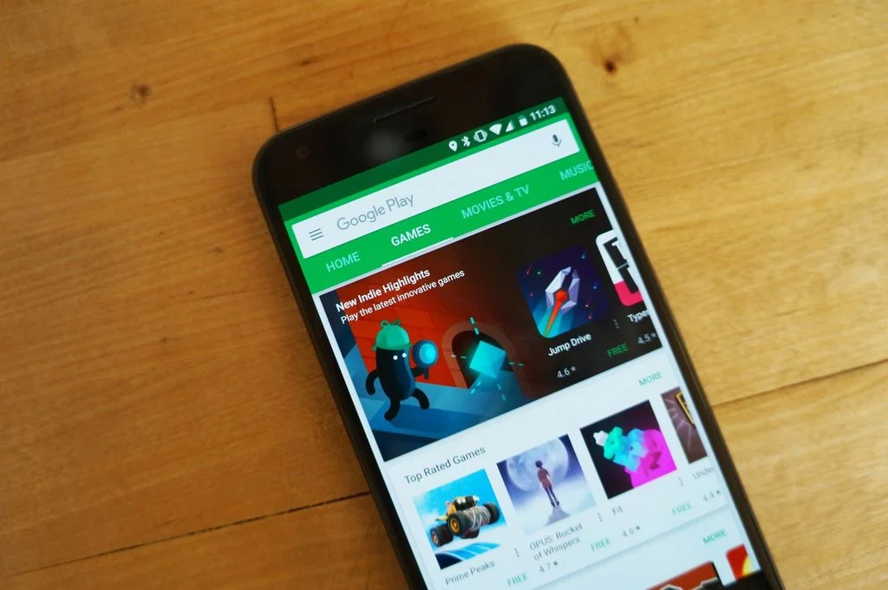

Versões recentes
Versões recentes Proteção de celulares Android
Proteção de celulares AndroidHistória do Android Market
Android Market para Google Play
O Android Market nasceu junto com os primeiros celulares Android que foram lançados no decorrer de 2008. Hoje, com quase 13 anos de vida, a loja coleciona altos e baixos, que vão desde números impressionantes de downloads até problemas de segurança relacionados com aplicações maliciosas.
Diferente do Android, que é um sistema de código-aberto e que pode ser acessado e desenvolvido por qualquer empresa ou usuário avançado, o Google Play só é instalado em celulares certificados, que são homologados pelo próprio Google. Isso é necessário pois a loja tem conteúdo original e também pago, o que requer alguns cuidados com segurança e uso de informações, sobretudo em plataformas que processam pagamentos.
Evolução dos ícones da loja
O Android Market durou cinco anos, sendo substituído, em 2012, pela marca Play Store, que mais tarde foi rebatizada de Google Play. A mudança de nome foi necessária para atender a nova estratégia do Google de oferecer produtos que vão além dos celulares Android e estão em outras plataformas, como computadores e Smart TVs, por exemplo. Assim, o Google Play se tornou uma loja mais ampla que hoje está presente em milhares de outros aparelhos.
Em 2012, contudo, a loja centralizava apenas duas outras categorias: Google Music (depois rebatizado de Play Música) e Google eBookstore (depois, Play Livros). Outras foram incorporadas ao longo dos últimos anos, como o Google Play Filmes e o Play Banca.
Controversas do Google Play
Atualmente, o Google Play é a maior loja de aplicativos para celulares, sendo também a maior em número de opções grátis (comparando com a App Store). Com grandes números, grandes responsabilidades e desafios chegaram, e foi questão de tempo até que os problemas começassem a bater na porta do Google.
Logo, a Play Store também é considerada como a loja menos segura e com o maior número de apps maliciosos em circulação quando comparada a App Store (Apple). Isso se deve a política pouco eficiente de homologação de aplicativos e jogos hospedados para avaliação por centenas de desenvolvedores. Casos de roubo de dados e de mineração de criptomoedas sem o conhecimento do usuário se tornaram populares entre os anos de 2016 e 2018.
Visual do Google Play até 2018
Além de otimizar seus protocolos de segurança com o passar do tempo, o Google embutiu no Google Play o Play Protect, que nada mais é do que um antivírus que escaneia o conteúdo que está dentro da loja e que pode ser baixado por todos os usuários. O sistema Android também teve seu sistema de permissões otimizado para que o usuário consiga controlar os acessos que são fornecidos a apps instalados.